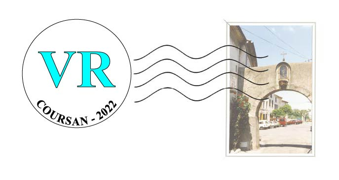

Exposition "Coursan Autrefois"
en réalité virtuelle

Bienvenue dans l'expérience de réalité virtuelle "Coursan Autrefois". Pour vivre une expérience optimale, merci d'utiliser un casque de réalité virtuelle de type Oculus, HTC Vive, Google daydream, Samsung GearVR, Vive focus, etc... Cependant, il est tout à fait possible de tester le site VR de Glorydev avec votre ordinateur ou votre smartphone. Pour cela deplacez le curseur au milieu de l'écran et cliquez avec le bouton gauche de votre souris (pour une utilisation sur ordinateur) ou avec un doigt (pour une utilisation via smartphone ou tablette). Vous pourrez ainsi utiliser les socles de téléportation et actionner les différents éléments avec lesquels vous pouvez intéragir. Merci d'utiliser le formulaire de contact du site de Glorydev.frpour nous faire parvenir vos apreciations quand à votre expérience VR Glorydev. Ce formulaire est accessible en cliquant sur le bouton un peu plus bas dans la page.
Avec votre ordinateur ou smartphone

Avec votre ordinateur ou smartphone